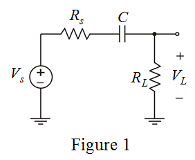

Apply voltage division rule to determine the load voltage.
Substitute  for
for  in the equation.
in the equation.
Therefore, the transfer function in s-domain is,
.
The transfer function represents a single time constant high pass filter network.
Consider the circuit diagram.

Apply voltage division rule to determine the load voltage.
Substitute for in the equation.
Therefore, the transfer function in s-domain is,
.
The transfer function represents a single time constant high pass filter network.
Determine the corner frequency of the high pass filter.
Determine the value of smallest coupling capacitor.

Therefore, the capacitance required to get a corner frequency less than  is
is
.